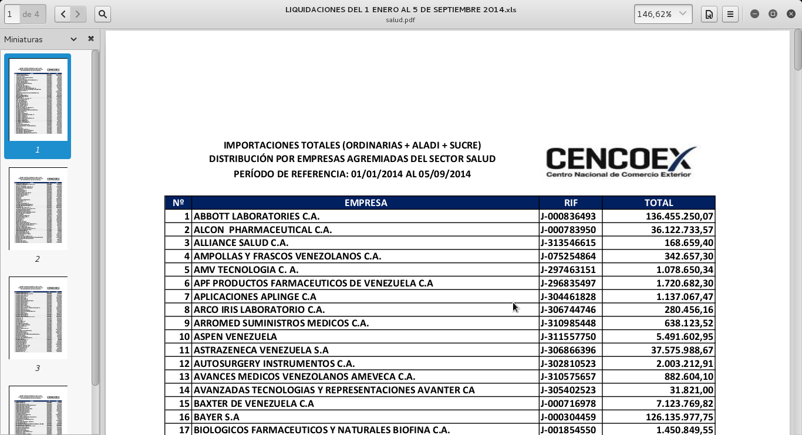
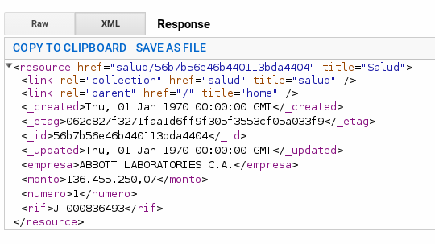

Extracción de Datos del PDF de reporte de salud de Cencoex
Posted on lun 08 febrero 2016 in Tutorial Python • 3 min read
Este artículo es la continuación de los artículos de extracción de datos de un PDF, enfocado al reporte de Cencoex del área de salud.
La siguiente figura muestra el pdf antes mencionado:

Los artículos anteriores de extracción de pdf son:
1. Extracción de información de PDFs con Python (parte 1).
2. Extracción de información de PDFs con Python (parte 2).
3. Extracción de Información de PDFs con Python (parte 3).
En el caso del Pdf del reporte de Cencoex se tiene el script ya explicado anteriormente que guarda la información en una base de datos mongodb llamada cencoex en una colección llamada salud.
La siguiente figura muestra los documentos de la colección:

Con está información almacenada en mongodb se creará un API Restful con Eve como se explico en los artículos anteriores.
La imagen anterior muestra que los documentos tienen los siguientes campos:
_id: En el identificador del objetorif: Es el RIF de la empresa a la cual se le asignaron los dolares, el campo es un string.monto: Monto en Dolares de la asignación de divisas a dicha empresa, el campo es un string.empresa: Es el nombre de la empresa a la cual se le asignaron los dolares, el campo es un string.numero: es el número asignado que aparece en el pdf, es un entero.
Con esta información es que se construirá el esquema para acceder por medio de Eve.
A continuación el archivo settings.py:
#Configuracion de mongodb
MONGO_HOST = 'localhost'
MONGO_PORT = 27017
#MONGO_USERNAME = 'user'
#MONGO_PASSWORD = 'user'
MONGO_DBNAME = 'cencoex'
RESOURCE_METHODS = ['GET', 'POST', 'DELETE']
ITEM_METHODS = ['GET', 'PATCH', 'PUT', 'DELETE']
#Esquema
schema = {
'numero': {
'type': 'integer',
},
'rif': {
'type': 'string',
'maxlength': 11,
},
'empresa': {
'type': 'string',
},
'monto': {
'type': 'string',
},
}
empresa = {
'titulo': 'numero',
'additional_lookup': {
'url': 'regex("[\w]+")',
'field': 'numero'
},
'cache_control': 'max-age=10,must-revalidate',
'cache_expires': 10,
'resource_methods': ['GET', 'POST'],
'schema': schema
}
DOMAIN = {
'salud': empresa,
}
Como se ve, el dominio es salud que toma la información de la empresa donde el campo a manejar es el número. Se definió el esquema que maneja los mismos campos de la colección.
El archivo run.py es el cual permite iniciar el API RestFul:
#!/usr/bin/env python
from eve import Eve
app = Eve()
if __name__ == '__main__':
app.run()
Para iniciar el API RestFul se ejecuta el run.py:
python run.py
Al acceder a http://127.0.0.1:5000/ por medio del cliente restclient se tiene lo siguiente:
Para acceder a la lista de elementos del API RestFul se coloca en el cliente http://127.0.0.1:5000/salud/, la siguientes figuras muestran el resultado:


Como se ve en la figura se trae un JSON con los documentos de la base de datos mongodb.
Ahora se quiere acceder al primer número del reporte de la siguiente forma:
http://127.0.0.1:5000/salud/1
El resultado se muestra en las siguientes dos figuras:


Claro, esto es una demostración, pero se puede buscar realizar busquedas con otros campos.
Se puede usar Django con el framework de API RestFul a fin de mejorar la forma de consultar dichos documentos de la base de datos mongodb.
La idea era mostrar lo fácil que es publicar los datos de un Reporte de Cencoex, en realidad lo más complicado es extraer los datos de un PDF, incluso se pierde información dependiendo del formato de documento utilizado, como se mostró en artículo anterior el documento es una hoja de cálculo en Excel y si se perdió información en la extracción.
Las instituciones que tienen dicha información en base de datos pueden hacer públicos los campos que se requieran de sólo lectura en un API RestFul, así se elimina el proceso de buscar información de PDFs.
A continuación dejo la propuesta que está trabajando la comunidad de software libre en github por parte de la comunidad de Software Libre de Venezuela.
A continuación unos vídeos de youtube: Gobierno Abierto:
Alianza para el Gobierno Abierto:
¡Haz tu donativo! Si te gustó el artículo puedes realizar un donativo con Bitcoin (BTC) usando la billetera digital de tu preferencia a la siguiente dirección: 17MtNybhdkA9GV3UNS6BTwPcuhjXoPrSzV
O Escaneando el código QR desde la billetera: